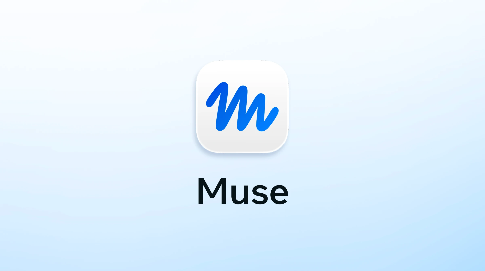
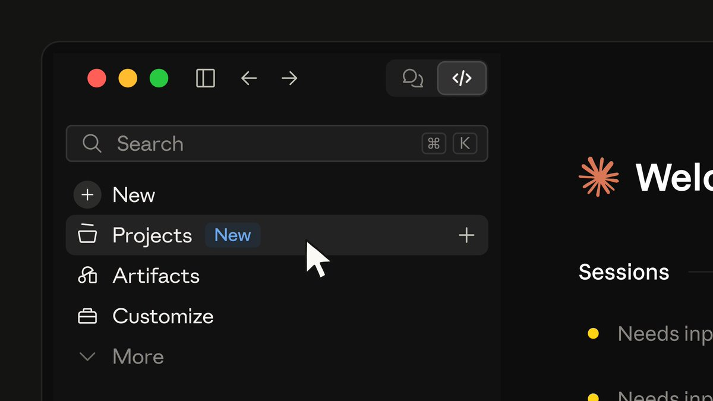
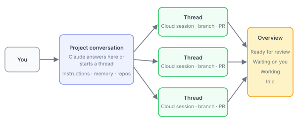
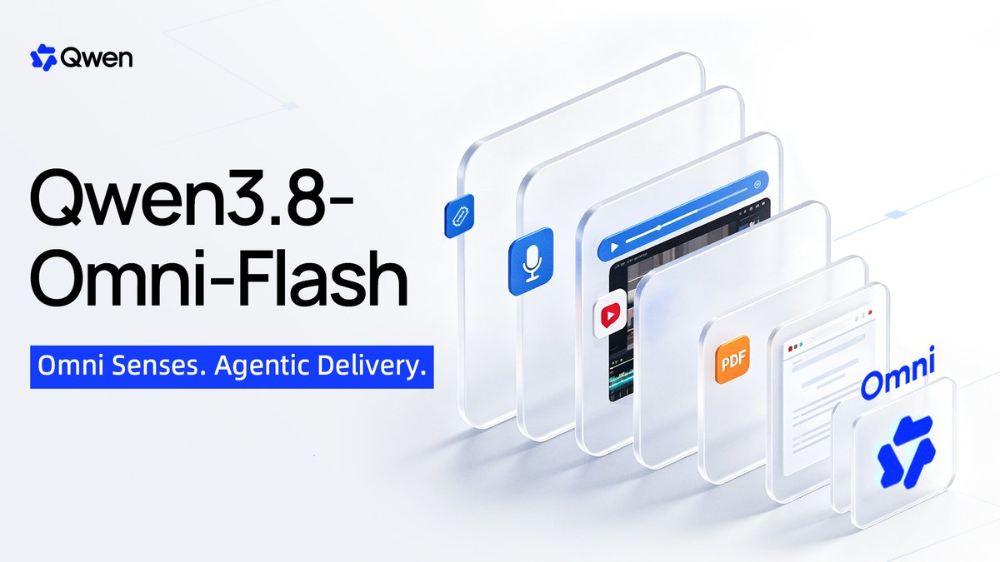
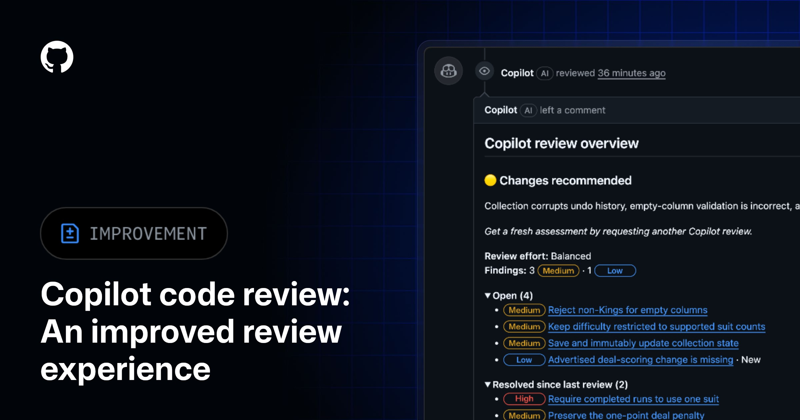

AI Intelligence Daily · 2026-09-19
AGENTS.md；国内 MiniMax Code CLI 开源、Qwen Omni+MM-Plugins 把全模态塞进 Harness；华为云官宣 Agentic Cloud。Copilot 审查闭环与 Anthropic×Accenture 嵌入式评估并行加码。
专栏一｜新闻
1. Meta Muse：Mac + 开发者 connectors + Canada
事实
@finkd 宣布 Muse for Mac 上线（下载页 Free AI Agent for Mac & Mobile）。同窗 @finkd 再宣布 开发者可构建 Muse connectors（约 1650 likes / ~87k impressions）；@Muse 上线 Granola + Notion connectors，并确认 Canada（iOS+Web）。注：ai.meta.com/muse/connectors 本轮 404，细节以官方 X 为准。
判断
Personal Agent 从客户端 shipping 进入 连接器生态——Agent Internet 委托/发现与 Desktop Runtime 双相关。09-18 日报漏收 Mac，本报完整收录并叠加 connectors UPDATE。

2. Claude Code Projects：Coordinator + 并行云线程 + 共享记忆
事实
Projects 从文件夹改为对话驱动：Claude 作 coordinator，并行 threads（各为独立 cloud Claude Code 会话，自有 branch），开 PR/跑测，shared memory + library；合上笔记本仍继续。Public beta：select Pro/Max + cloud sessions；本地执行 soon。
判断
多 Agent 编排产品化——与 Cursor Projects、GitLab /goal 对照三角。


3. MiniMax Code CLI 开源
事实
仓库 MiniMax-AI/minimax-code（MIT）：TUI / Headless / ACP；权限、Goals、MCP、BYOK。明确不含 Desktop 源码。★721；开源后密集安全/权限 commit；尚无 GitHub Release tag。npm latest 0.4.12。
判断
国内一线可审计 Coding Harness 样本——OSS 可用性跃迁，非二进制首次出现。

4. Qwen3.8-Omni-Flash + MM-Plugins
事实
Agentic 原生全模态 + tool use；QwenCloud 可调；开源 Qwen-MM-Plugins（任意 Harness 多模态化）。Live Harness 仍 404。HN ≈327p/126c。
判断
全模态基座 + 插件层插入现有 Coding/Work Harness——短期可试。

5. Claude Code 2.1.277：AGENTS.md
事实
无 CLAUDE.md 时回退读 AGENTS.md（Bedrock/Vertex/Foundry 尚未）。HN ≈453p/164c。
判断
项目说明书文件名向社区约定收敛——跨 Harness 弱互通标准。
6. 华为云 Agentic Cloud / 智果 AgentArts
事实
官方文：昇腾950集群全球上线、Agentic MaaS、智果 AgentArts（文称 100+ 企业）。昇腾950 9/30 国内、11/30 海外商用——今日非全面商用。
判断
企业 Agentic 底座叙事；非消费级 Desktop shipping。
7. Anthropic × Accenture 嵌入式评估
事实
Faculty 牵头 embedded evaluation；双方各预计五年至少 $1B 投入该能力。细节仍在形成。
判断
frontier 治理基础设施重量级动作——审计/发布门槛信号。
8. GitHub Copilot Code Review 体验改进（GA）
事实
Review 进度分组（Open / Resolved / Previously missed）；更智能 auto-resolve；批量采纳生成 commit message。同日 Agents 周更含 Dev Container、直开 PR、model selection 三档等。
判断
Agent Loop「审查→提交→会话回收」产品化，非新模型。

专栏二｜话题热议
AGENTS.md · Muse connectors · Qwen Omni
AGENTS.md HN ≈453p——互通约定讨论热过功能本身。Muse connectors 官方帖高互动。Qwen Omni HN ≈327p。国内媒体首页本窗无独立升格热议主条。
专栏三｜开源雷达
- MiniMax-AI/minimax-code ★721 · 开源 + 安全/权限 commits · 无 Release tag
- Tencent/BrowserSkill ★5285（短窗大涨）· 窗内 commits · 仍 0.3.0 tag
- QwenLM/Qwen-MM-Plugins ★2907 · Omni 相关 commits · Live Harness 404
- cline Desktop v0.0.32 · Hub/app 构建身份修复 · ★68695
趋势与启示
趋势：Personal Agent connector 生态；多 Agent 编排产品化（Projects / Cursor / GitLab）；AGENTS.md 弱标准；国内开源 Harness + 全模态插件 + 企业 Agentic Cloud；审查闭环与嵌入式评估并行。
智能体互联网：Muse connectors 委托叙事；AGENTS.md 互通；MM-Plugins 跨 Harness 安装面。
Work/Agent 引擎：Claude Projects coordinator 样板；MiniMax OSS 对照；Copilot review 生命周期；Muse Desktop 权限+连接器。
价格 / 订阅
今日未见可核实的重要新促销或终端 API 调价。